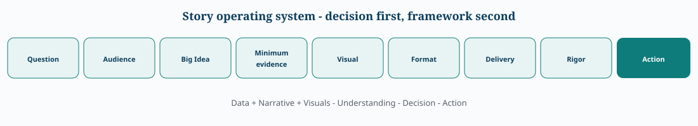
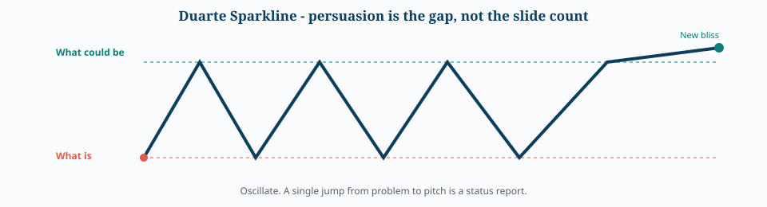
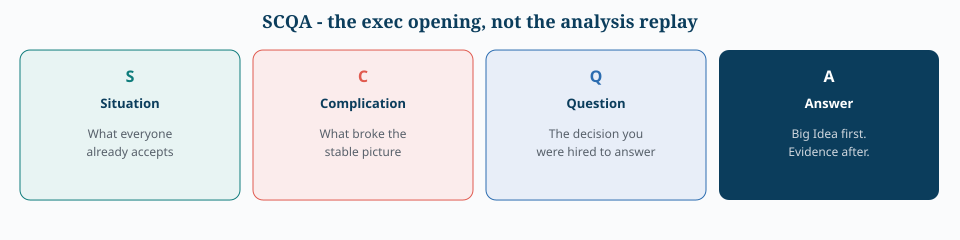
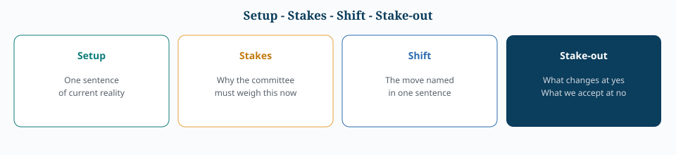

Framework Selector — Knaflic, Dykes, Duarte, SCQA
Operating system
This library already has a production spine. Published books are modules you plug into it.


Data + Narrative + Visuals → Understanding → Decision → Action
Selector
flowchart TD
D{Is there a decision owner in the room?} -->|No| Stop[Do not story. Annotate the visual. Stop.]
D -->|Yes| J{Diagnose, choose, or inspire?}
J -->|Diagnose| W[What / So what / Now what + Knaflic 3-minute + minimum evidence]
J -->|Choose| S[SCQA or Setup-Stakes-Shift. One visual per supporting point.]
J -->|Inspire| Du[Duarte Sparkline + Dykes climax + honest uncertainty]
W --> C{Is the finding a causal chain?}
S --> C
Du --> C
C -->|Yes| P[Overlay Pixar because-of-that. Then stress-test mix, Simpson, denominator.]
C -->|No| Done[Keep the Big Idea to one sentence.]The families
1. Distill first — Knaflic
Already in Part I: 3-minute story and Big Idea.
Job: make a chart speak. Failure: a story that is only a cleaned graph.
Keep: problem, finding, one piece of evidence, impact, next step. If you need twelve bullets, you do not have a Big Idea yet.
2. Narrative arc — Dykes
Freytag applied to analytics: exposition → rising action → climax = insight → falling action → resolution that demands a decision.
Job: persuade after a real turning point. Failure: theatre on a flat finding.
Context frames: comparison, history, scale, background, example, validation.
3. Contrast engine — Duarte Sparkline
Not a data method. A persuasion waveform.


Use for change requests, launches, funding. Wrong tool for a diagnostic memo or a monitoring dashboard.
The audience is the hero. You are the mentor.
4. Answer first — SCQA / Pyramid
The missing executive grammar in this hub. Big Idea is the sentence. SCQA is the first four beats of the meeting.


SCR is the shorter cousin: Situation → Complication → Resolution.
One idea per slide. Data advances the recommendation; it does not replay the notebook.
5. Decision stakes


Pairs with Case 6: thirty BI metrics become four sentences.
6. Causal spine — Pixar
Once upon a time → every day → until one day → because of that → until finally → ever since.
Use when you must explain a chain (data quality → forecast error → stockouts). Dangerous when you fake causality to complete the spine. Stress-test with the statistical-traps page.
7. Analyst wrapper — What / So what / Now what
Findings → conclusions → recommendations. How is optional and audience-dependent. Already encoded in Parts VI–VII as format choice.
8. Explain-the-picture — McCandless + ADEPT
Not full story frameworks. Headline, anticipate the next question, explain the insight, make it relevant. ADEPT: Analogy, Diagram, Example, Plain language, Technical depth. Already in Parts II and V.
Comparison
| Framework | Starts from | Shape | Best job | Failure mode |
|---|---|---|---|---|
| Knaflic | Message + visual | Compression then craft | Make a chart speak | Story that is only a cleaned graph |
| Dykes | Insight as climax | Freytag arc | Persuade after a discovery | Theatre on a flat finding |
| Duarte Sparkline | Gap now vs better | Oscillation | Change / vision / launch | Emotional contrast with thin evidence |
| SCQA / Pyramid | Recommendation | Answer → why | 20-minute exec slot | Buries uncertainty to look decisive |
| Setup–Stakes–Shift | Decision rights | Four sentences | Committee vote | At-no gets catastrophized |
| Pixar spine | Causal chain | Because-of-that | Ops / incident / root cause | Implied causality |
| What / So what / Now what | Finding | Three beats | Analyst → manager handoff | Stops at interesting |
| McCandless | One visual | Caption logic | Slide or tile | No decision attached |
Already in this library vs still thin
| Owned | Where | Still thin |
|---|---|---|
| Big Idea, 3-minute story | Part I | SCQA as the meeting opening |
| Data + Narrative + Visuals | Hub OS | Duarte contrast for change requests |
| ADEPT, personas | Part II | Explicit yes / no stakes |
| McCandless, Insight → Impact → Action | Part V | A written rule for when not to story |
| 1–3–25, format stack | Parts VI–VII |
Integrity constraint
Every narrative framework will try to complete the arc. Data often refuses.
- Keep the Big Idea to one sentence.
- Show the minimum evidence that would falsify it.
- Put uncertainty on the visual, not in an appendix nobody opens.
- If the arc only works by hiding mix, seasonality, or the denominator, it is not a story. It is a chart crime with better copy.
Use the visualization hub for encodings, scales, and integrity. Use this page only after the evidence survives that test.
Related
- Evidence layer: 📊 Data Visualization — Comprehensive & Deep Reference